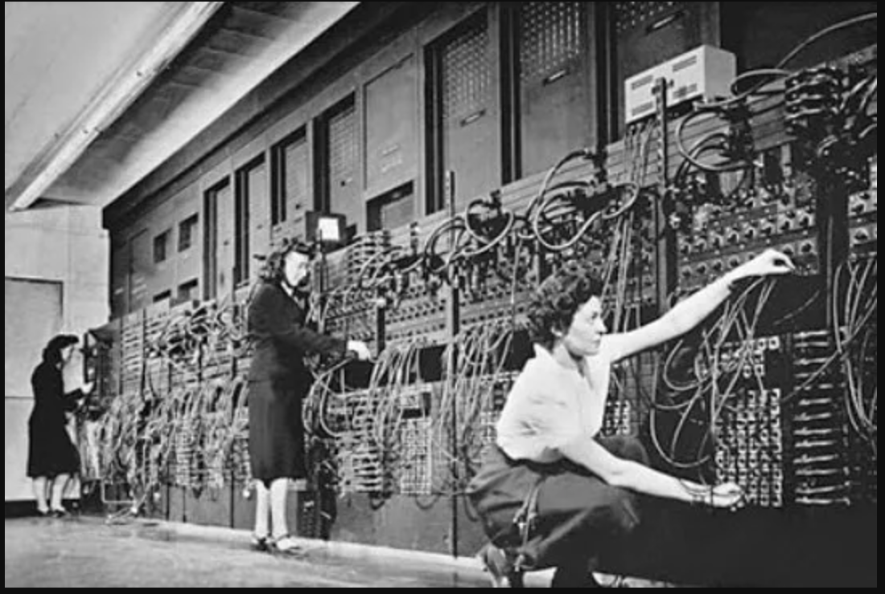
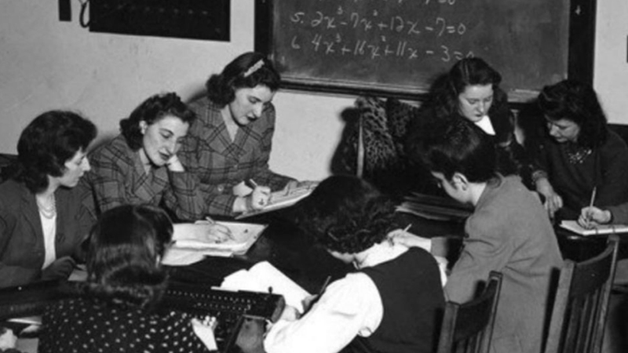

Top Secret Rosies
Inicio
Top Secret Rosies es el nombre que se le da a un grupo de mujeres que en 1942 fueron contratadas por el ejército Estadounidense para programar uno de los primeros computadores, el ENIAC. Adela Katz, Betty Snyder, Jean Jennings, Kathleen McNulty, Marlyn Wescoff, Ruth Lichterman y Frances Bilas, estos son los nombres del grupo de mujeres que trabajaron en uno de los primeros ordenadores programables.
La computadora ENIAC era prácticamente una habitación entera y dentro de ella se encontraba este grupo de programadoras conectando los módulos mediante cables manguera y poniendo sus interruptores en las posiciones adecuadas. Con ello conseguían que la máquina encadenara los cálculos y pasará datos de un módulo a otro, sin mencionar que en lugar de usar el sistema binario actual, usaba el sistema de numeración decimal y sólo podía manejar números de hasta 20 cifras, las famosas computadoras de cálculo que hemos mencionado antes, dieron paso a otras como el Mainframe que hoy siguen en activo.